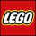

|  | forside | Produktor | Legoland |
LEGO SYSTEM A/S er en international dansk familieejet legetøjskoncern grundlagt 10. august 1932, med hovedsæde i Billund. Oprindeligt lavede virksomheden udelukkende trælegetøj af høj kvalitet, men i 1949 begyndte de også at lave legoklodser af plastik samt andre produkter.
I dag producerer og sælger virksomheden en række forskellige legetøjstemaer, der alle har LEGO systemet til fælles, hvilket gør at de kan blandes på kryds og tværs.
Navnet "LEGO" er en sammentrækning af ordene "leg godt". Navnet betyder dog også på latin enten "jeg samler", "jeg sammensætter" eller "jeg læser". Disse yderligere betydninger, hvoraf de to første er meget relevante, gav først mening, da virksomheden begyndte at lave plastikklodser med knopper (legoklodser), sådan at de kunne sættes sammen.
28. januar 1958 kl. 13:58 indgav virksomheden patentansøgning på rør i Lego-systemelementer. Titlen lød: ”Kasseformede elementer med koblingsorganer”. Rør i elementerne bevirkede, at elementerne kunne holde langt bedre sammen. Patentet betragtes som Lego-systemets grundpatent. Det er dog ikke dette patent, der er hovedårsagen til LEGO-systemets og LEGO-koncernens succes. Vigtigere er selve LEGO-systemet.
I modsætning til andre firmaer, der har markedsført ”kasseformede elementer med koblingsorganer”, har LEGO-koncernen i udviklingen af nye elementer sikret, at alle nye elementer passer sammen med alle tidligere frigivne elementer. Det er sikret ved, at man i LEGO-koncernen har udarbejdet og overholdt præcise elementstandarder, der beskriver kravene til Lego-systemelementer. Fundamentet i systemet er standarder for: moduler, koblinger og regler for, hvordan systemet anvendes.